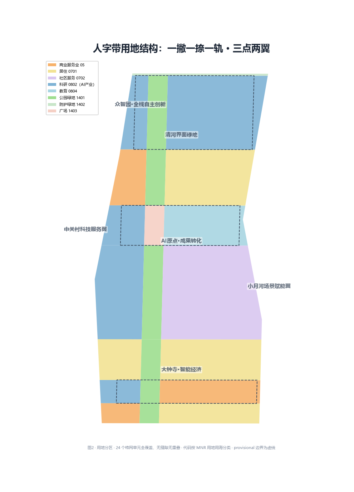
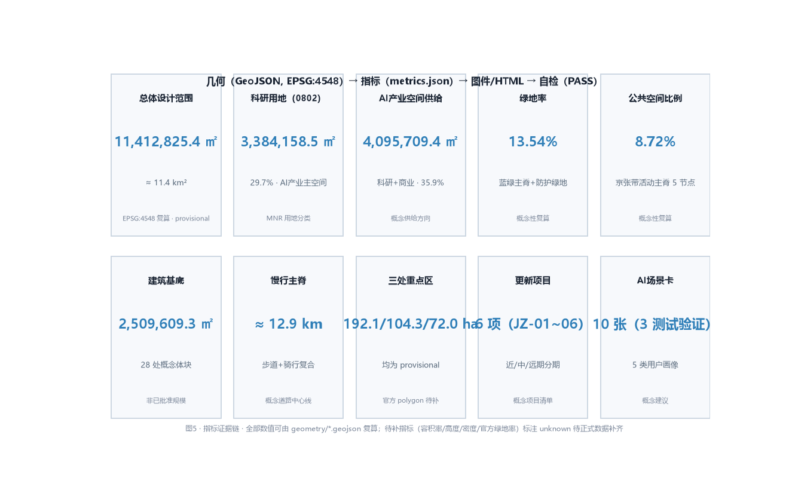

总览地图
众智园 AI 自主创新加速区
北京 AI 原点社区
大钟寺 AI 产业集聚区
两翼

三层范围
11,412,825.4 ㎡
总体设计范围（EPSG:4548 复算）
provisional · 公告约 11.4 km²
3
重点详细设计区域（处）
均为 provisional
43.6 km²
统筹研究范围（公告约值）
用于产业与未来城市研究
重点区域
1,929,201.877 ㎡
众智园 AI 自主创新加速区
花园型全栈自主创新街区（provisional）
1,043,236.909 ㎡
北京 AI 原点社区
近校成果转化与人才社区（provisional）
720,454.221 ㎡
大钟寺 AI 产业集聚区
城市型智能经济街区（provisional）

用地分区
3,384,158.5 ㎡
0802 科研用地（29.7%）
AI 研发/转化/服务主空间
2,768,342.2 ㎡
0701 居住用地（24.3%）
存量社区 + 人才社区
1,943,373.0 ㎡
0702 社区服务（17.0%）
社区服务带 + 公共服务节点
1,060,409.4 ㎡
05 商业服务业（9.3%）
智能消费 + 科技服务
711,540.9 ㎡
0804 教育用地（6.2%）
近校教育科研配套
1,314,607.5 ㎡
1401 公园绿地（11.5%）
京张轨道蓝绿主脊
59,709.4 ㎡
1402 防护绿地（0.5%）
北五环防护带
170,711.6 ㎡
1403 广场用地（1.5%）
AI 原点广场节点

交通慢行
≈ 12.9 km
慢行主脊（步道+骑行复合，概念中心线长度）
概念道路中心线，非道路红线
3
片区联络道
大钟寺南 / 原点东西缝合 / 众智园对外
5
公共活动节点
南端 / 大钟寺 / 中段 / AI 原点 / 北段

蓝绿公共空间
1,545,028.5 ㎡
绿地面积
公园 + 防护绿地 + 广场复合
13.54%
绿地率（概念示意绿地率）
概念示意值，非官方审定；官方绿地率待补（unknown）
995,421.2 ㎡
公共空间面积
京张带活动主脊 5 节点
8.72%
公共空间比例（概念复算）
与绿地存在复合
建筑
2,509,609.3 ㎡
概念性建筑基底
28 处概念体块（表达空间供给）
4,095,709.4 ㎡
AI 产业空间概念供给
科研 + 商业（35.9%）
711,540.9 ㎡
人才教育科研配套
0804 教育用地
更新项目
| 编号 | 项目 | 类型 | 分期 |
|---|---|---|---|
| JZ-01 | 京张遗址公园慢行断点缝合 | 公共空间/交通 | 近期 |
| JZ-02 | 众智园清河创新界面 | 蓝绿/产业展示 | 中期 |
| JZ-03 | 原点社区近校成果转化街 | 城市更新/产业 | 近期 |
| JZ-04 | 大钟寺站四象限步行连通 | 轨道一体化/慢行 | 远期 |
| JZ-05 | AI 公共服务与端侧算力节点 | 新基建/公共服务 | 中期 |
| JZ-06 | 全球 AI 活动周公共路线 | 运营/品牌 | 近期 |
6
更新项目（概念）
近/中/远期各阶段
5,978,284.1 ㎡
近期范围（PHASE-001）
0–3 年
3,922,791.8 ㎡
中期范围（PHASE-002）
3–6 年
1,511,756.4 ㎡
远期范围（PHASE-003）
6–10 年
AI 场景
10 张
AI 场景卡（含 3 张测试验证）
概念建议 · 不写成已批准运营
5 类
用户画像
研发/创业/学生/居民/国际访客
每张场景卡映射空间位置、服务对象、运行数据、隐私边界、人工复核、运营主体、可视化图层与风险。完整场景卡与测试验证场景见 proposal.md 第六章。
核心指标

任务覆盖
合规矩阵覆盖公告 17 项任务（1.3.1–1.5.3.3）与智能体 6 项任务（agent.1–agent.6），每项对应报告章节、图层、指标、图纸、可视化、来源、假设与自检；详见 compliance_matrix.json。
自检状态
几何拓扑 PASS
land_use 全覆盖、无缝隙、无重叠
空间复算 PASS
核心面积与比例与几何一致（±1%）
专业证据 PASS
5 标准 / 15 深度项 / 27 known metrics 全覆盖
视觉静态 PASS
本页离线、无远程资源、无 iframe/API/追踪
唯一系统性提示：边界为 provisional，待官方 polygon 发布后整体重算。完整自检报告见 self_check.json。